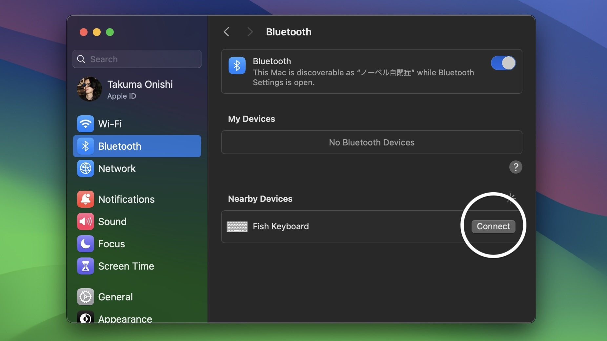
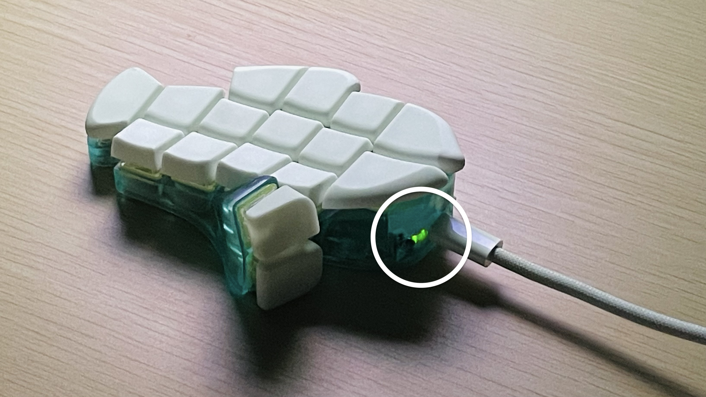
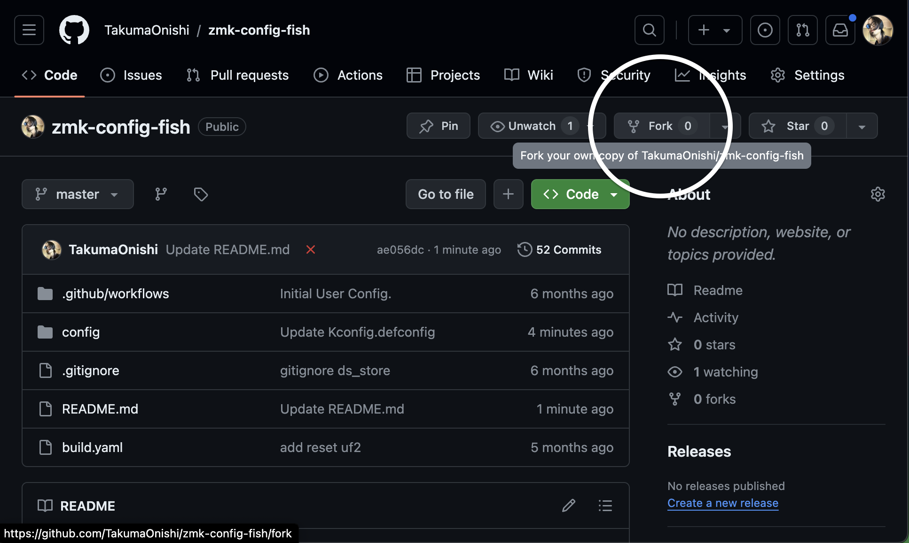
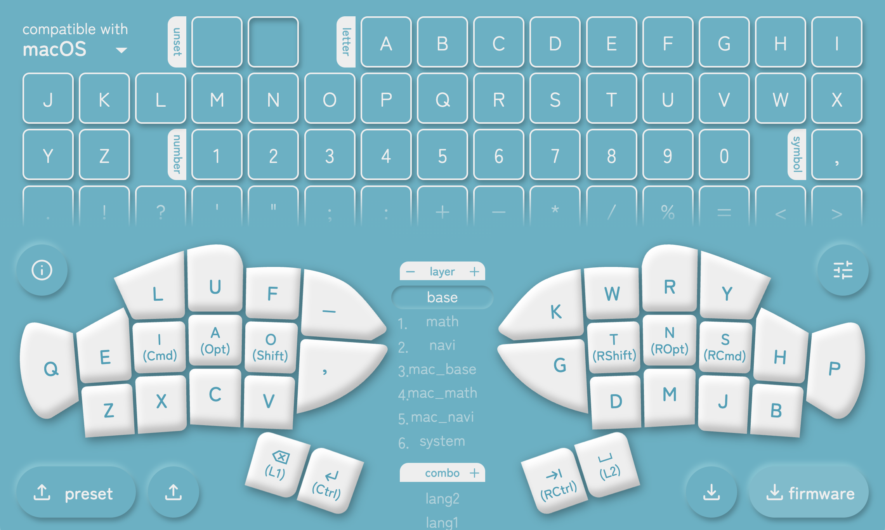
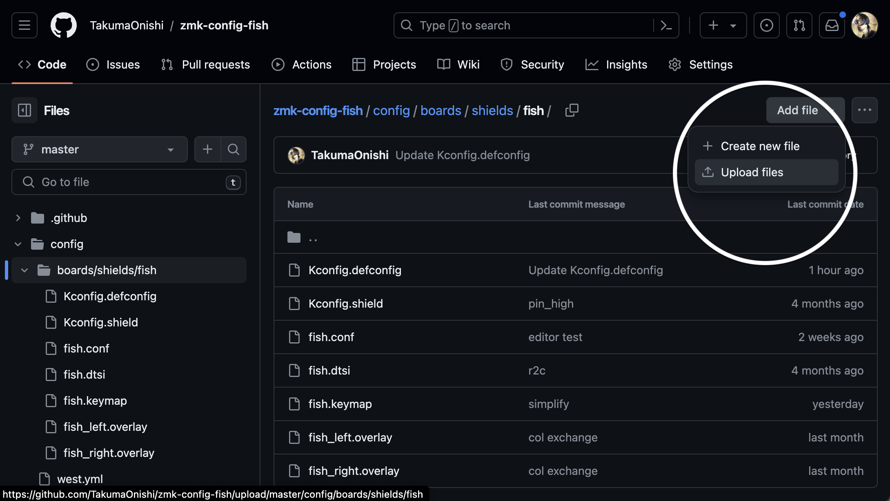
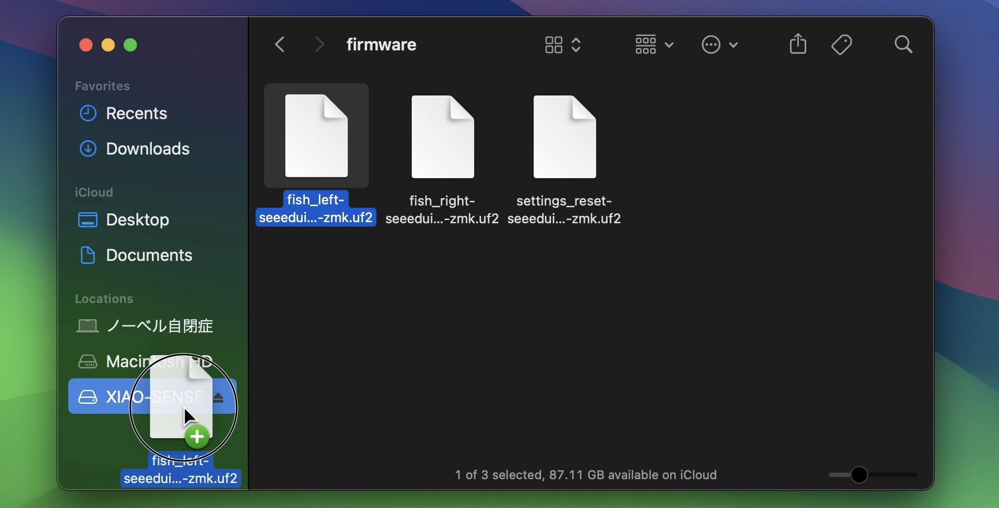

ユーザーガイド
おさかなキーボードをお買い求めいただき、ありがとうございます。
使い方を説明させてください。
warning使用上の注意
液体や粉塵をかけないでください。筐体は密閉されていないため、内部に侵入して接触不良やショート・バッテリーの発火を起こす可能性があります。
直射日光に長期間当てないでください。筐体とキーキャップは紫外線で硬化するレジンでできているため、変色・ひび割れを起こす可能性があります。
日本国外で電源を入れないでください。組み込みモジュールの転記で技適認証を省略できる国は日本くらいのため、違法電波となる可能性があります。
使い始める

二匹を向かい合うように置き、それぞれの下アゴの陰にある灰色の電源スイッチを上に切り替えます。
パソコンからBluetooth機器の管理画面を開き、「Fish Keyboard」が表示されたら接続します。
入力方式の指定を求められた場合はANSI（US配列）を選択します。
適当なキーを押して、入力が通っているか確かめます。
動作確認がしやすいテストページもご活用ください。
infoデフォルトキーマップ
開封時点では以下のようなキーマップが設定されています（購入時期によって若干異なる場合があります）。

短くキーを押すと青字が入ります。英字の並びは大西配列です。
長押しすると背景の修飾キーが入ります。
OやTはShift、AやNはOption/Alt、IやSはCommand/Windows/Meta、EnterやTabはControlが入ります。
BackSpaceは黄色レイヤー、Spaceは赤レイヤー、その両方の長押し中は灰色レイヤーが有効化します。
これらの複合キーは、短く押した直後に長押しすれば短打側の長押しに入ります。
灰色レイヤーにはいくつか特殊なキーがあります。
BT Sel 0~4は、その番号に登録された（なければ新規）機器とBluetooth接続を試みます。
BT Clearは現在接続中の、BT Clear Allはすべての機器とのペアリング情報を削除します。
USB↔︎BTは、親機充電中に出力先をUSBからBluetoothに切り替え、再度押すと戻します。これはACアダプターなど、接続したい機器以外から給電している場合に便利です。
Mac↔︎Winは、Windows向けのキーマップを有効化し、再度押すか電源が切れると戻します。具体的には、Command/Windows/MetaとControlの位置を入れ替え、photo_cameraの中身を⇧⌘3からPrintScreenに変えます。
XとC、MとJを同時に押すとそれぞれ日本語IMEのオフ、オンが入ります。
これらは、キーマップを変えるの手順で自由に書き換えることができます。
充電する
USB Type-Cケーブル（別売り）を用意し、電源スイッチを入れた状態でパソコンと有線接続します。
うまく充電できていれば、口の横が緑色に光ります。
USB接続と電源スイッチの入切によって、おさかなは以下のように動作します。
| USB接続あり | USB接続なし | |
| 電源 オン |
バッテリーを充電しながら動作します。親機ならUSBに入力しますが、OUT_XXXキーでBlueTooth入力にも切り替えられます。 | バッテリー電源で動作し、Bluetoothで入力します。通常はこの状態で使用してください。 |
| 電源 オフ |
USB電源で動作し、USBに入力します。ただし、子機はどんな場合でもBluetoothで親機に入力を伝えようとします。 | 動作しません。長時間使用しないときはこの状態にしてください。 |
info親機と子機
おさかなキーボードには親機と子機があります。
子機は親機に入力を伝え、親機がそれを合わせた入力をパソコンに伝えます。
このため、親機のみ電源を入れて使うことはできますが、逆はできません。
左手デヴァイスとしての使用を考え、出荷時は左手を親機に設定しています。
また同様の理由から、子機は親機の４倍ほど充電が長持ちします。
一部のOSで確認できる充電残量は親機のもので、子機の充電残量を確認する方法はありませんが、親機のついで程度に充電してあげてください。
キーマップを変える
おさかなキーボードを構成するZMK Firmwareの一般的なリマップ手順に準じ、以下のように作業してください。
ファイル置き場を作る（初回のみ）
Githubのアカウントを用意し、おさかなキーボードの設定リポジトリをフォークします。
infoGithubとは
Githubは世界最大のソースコード共有ツールで、リポジトリはプロジェクトみたいなこと、フォークは自分用に複製することです。
詳しい手順は数多ある解説記事に譲ります。
ファイルを更新する
キーマップエディターでキーマップを作成し、saveボタンからfish.keymapファイルをパソコンに保存します。
作成したGithubリポジトリのconfig > boards/shields/fishを開き、新しいfish.keymapをドラッグ＆ドロップ、またはAdd fileボタンからアップロードしてcommitします。
infoファイルの置き方
アップロードするとき、同名のファイルは暗黙裡に置き換えられます。
名前を変えて複数の.keymapファイルを置いておくこともできますが、有効なのはfish.keymapという名前の１つだけです。
また、キーマップは以下のような方法でテキストとして編集することもできます。
Github上の editボタンから直接編集し、commitする
ローカルにcloneしてテキストエディタで編集し、pushする
リポジトリの内容を更新すると、Githubが自動的にファームウェアの生成を始めます。
２分待ってactionsタブを開き、firmware.zipをダウンロードして解凍します。
info簡略化の計画
将来的には、キーマップエディターでビルドまでできるようになるかもしれません。
おさかなキーボードの売れ行き次第です。
ファームウェアを更新する
おさかなの両機の電源を切った状態で、親機（既定では左手側）だけをパソコンとUSB接続し、上顎の陰にある白いリセットボタンを素早く２回押します。
すると、パソコンに〈XIAO-SENSE〉という外部ストレージが出現するので、親機側のファームウェア（左手ならfish_left~.uf2）をその中に配置します。
読み込まれると自動でキーボードの認識に戻り、新しいキーマップで動作するはずです。
info無視できるエラー
ファームウェアを更新するとき、ファイルの転送やディスクの取り出しに関するエラーが出ることがありますが、通常は無視して大丈夫です。
（参考：Troubleshooting｜ZMK Docs）
こんなときは
パソコンにBluetooth接続できない
USB接続すればBluetoothでも接続できるようになるなら、そのまま充電してください。
他のホストに接続している可能性があるなら、BT Sel 1~5（空いているプロファイル番号）を押すか、BT ClearまたはBT Clear Allで不要なペアリングを解放し、おさかなをペアリングモードに入れてください。
それでも接続できず、他のホストには接続できるなら、パソコン側の設定を見直してください。
infoペアリングの解除
Bluetoothのペアリングを解除するには、キーボード側からもパソコン側からもプロファイル情報を削除する必要があります。
まず、解除したいプロファイルに接続した状態でBT Clear（すべて削除したい場合はBT Clear All）を押して、Bluetooth接続が切れたのを確認します。
その後、パソコンのBluetooth設定からもおさかなの登録を削除します。
子機が親機に接続できない
子機をUSB接続すれば親機に接続できるようになるなら、そのまま充電してください。
更新するファームウェアの左右を間違えた、または親機の左右を変えた直後なら、一度リセットファームウェア（settings_reset~.uf2）を読み込ませたあと正しいファームウェアを読み込ませる、という操作を両機に行なってください。
（参考：Split Keyboard Halves Unable to Pair｜ZMK Docs）
充電ができていない
電源スイッチを入れた状態でパソコンやACアダプターにUSB接続しても緑の光がつかないなら、修理を申請してください。
キーが反応しない・反応が悪い
キーコードの割り当てによらず反応しない・反応が悪いキーがあるなら、修理を申請してください。
サポートと修理
キーマップや使用法についての情報交換をしたいときや、不具合の対処に助けが必要なときは、O24 worksのDiscordコミュニティで検索・投稿してください。
修理を申請したいときは、Discordで大西拓磨（takuma_onishi）にDMするか、support@o24.worksにメールしてください。